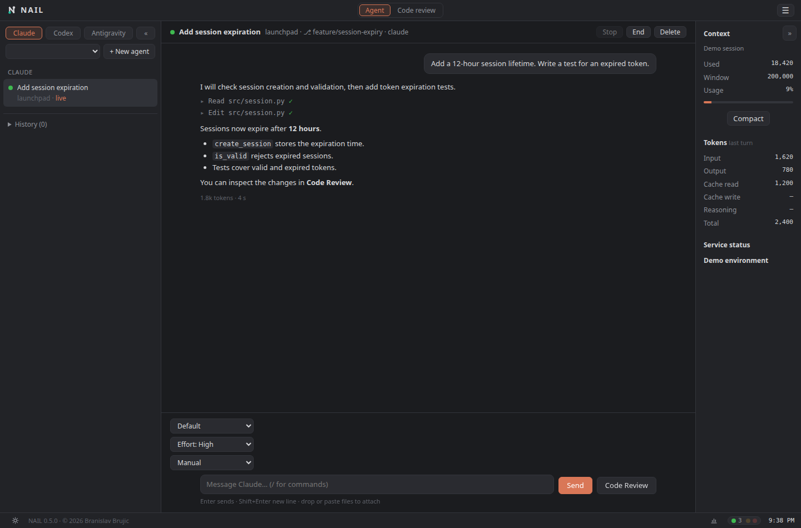
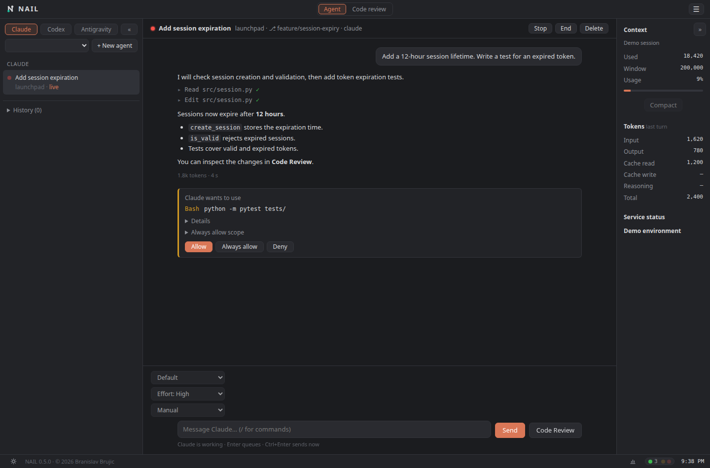
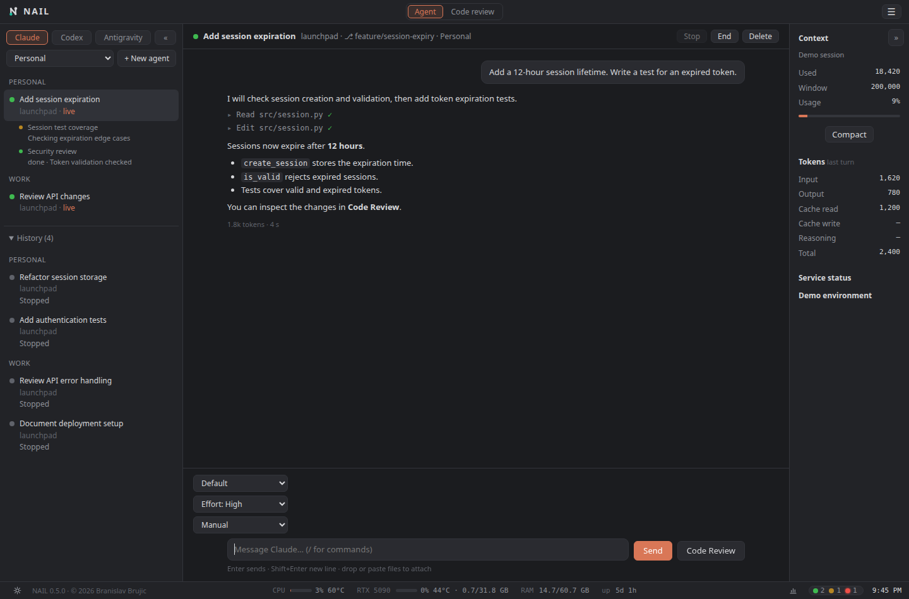
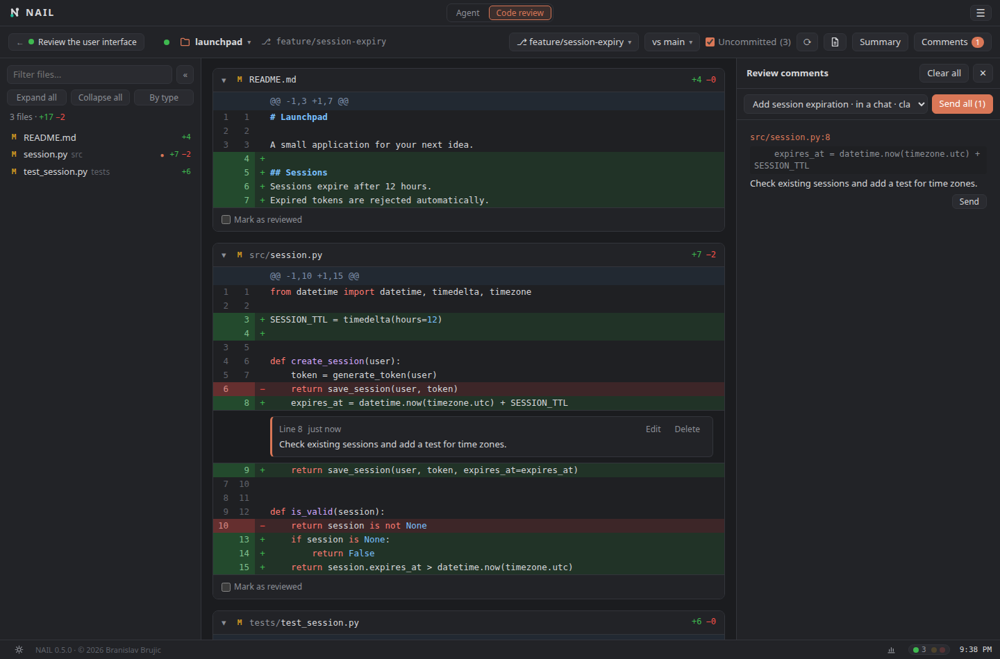
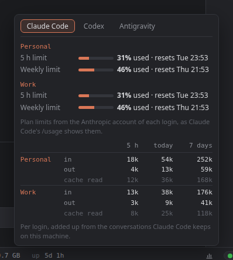
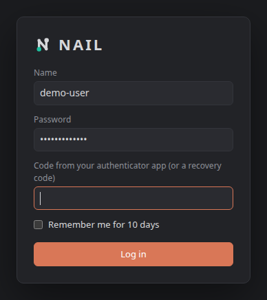

Install it on your Linux / macOS host, connect your AI tools, then open the server URL in your browser.
Start with installation →No guides match your search. Try “MFA”, “queue”, “worktree” or “proxy”.
Install NAIL#
Run NAIL on your own Linux or macOS computer or server.
You need Python 3.12 or newer, Git, and the AI command-line tools you intend to use. Install and sign in to those tools as the same operating-system user that runs NAIL.
pipx install 'nailayer[claude-sdk,codex-sdk,push]'
nail --versionThis includes the default Claude and Codex SDK chat adapters and optional Web Push support. Antigravity uses its CLI adapter by default. You can omit extras you do not need.
For a source checkout, run these commands from the project directory:
python3 -m venv .venv
.venv/bin/python -m pip install -e '.[claude-sdk,codex-sdk,push]'
.venv/bin/python -B nail.pyStart your first workspace#
Open a Git repository and choose how to run NAIL.
nail ~/src/my-project- On an interactive first start, follow the setup questions and create your first admin account.
- Open the URL printed in the terminal, usually
http://127.0.0.1:8765/. - Sign in. Use Agent for conversations or Code review to inspect changes.
| Command | What it does |
|---|---|
nail | Start with the last repository, the current directory repository, or the repository picker. |
nail ~/src/my-project | Open a particular repository. |
nail --gui | Open a local app window; needs a compatible browser. |
nail -f | Keep the server in the foreground. |
nail setup | Run the interactive setup again. |
nail --version | Print the installed version. |
The web server normally runs in the background and prints its PID and URLs. The GUI server stops when its app window closes. NAIL can choose a different port if the default is already taken; use the printed URL.
Connect your AI tools#
Make your installed tools and their sign-ins available to the server.
- Install Claude Code, Codex or Antigravity on the machine running NAIL.
- Complete the tool’s own sign-in under NAIL’s operating-system user.
- Check that its executable is on the
PATHused to start NAIL. - Open the matching platform tab in Agent mode.
| Integration | Default chat backend | Account behavior |
|---|---|---|
| Claude Code | Python Agent SDK; requires claude-sdk. | Reuses the selected Claude Code login and project settings. |
| Codex | Python SDK; requires codex-sdk. | Reuses the regular Codex CLI login and selected CODEX_HOME. |
| Antigravity | CLI adapter. | Uses the regular Antigravity CLI login. |
| Antigravity SDK | Optional agy-sdk extra and explicit opt-in. | Uses API or Vertex/ADC credentials, separate from the personal CLI subscription. |
If an expected SDK is missing, install its extra; NAIL reports an error instead of silently changing backends. See backend options for explicit CLI/SDK selection.
Open repositories, branches and worktrees#
Choose the code you want to inspect.
- Click the repository name, or press O.
- Select a recent repository, browse server-side folders, or type a path. Press Tab to complete a suggested folder.
- Use the top-right selectors to choose what to show and the base branch.
- Uncommitted changes shows changed and new files since the checked-out branch’s last commit.
- A branch comparison shows changes since the branch forked from the selected base.
- Local and remote branches can be reviewed without checking them out.
- Worktrees appear in the selector with their branch and changed-file count. Choosing one switches to that working copy.
If a selected worktree disappears, NAIL falls back to the main checkout. The open review repository is shared by connected windows; opening another repository changes it for other viewers too.
Start and control a conversation#
Choose an agent, send a task and inspect the tools it uses.
- Switch to Agent mode and choose a platform tab.
- Select an existing conversation or click + New agent and choose its working folder and, where available, login.
- Write your task and press Send or Enter. Responses stream as the agent writes.
- Click a tool row to inspect its input and output.


Stop interrupts the current work; End ends the active chat. Writing to an ended conversation can resume it. Delete removes or archives the conversation from the list according to the provider; it is not a promise to erase its on-disk history. A Claude background-agent deletion can also remove its managed worktree when safe.
Use Code Review next to Send when changes are available. In the review view, the back-to-agent button returns to that conversation.
Choose a model and effort level#
Adjust the active conversation when its provider supports the option.
- Wait until the conversation is idle, without pending approvals or queued work.
- Use the model selector above the message box.
- Choose an effort level if that model and adapter offer one.
Available models and effort choices come from the integration. A missing or disabled selector means the operation is unavailable for that session or it is currently busy. The chat model is separate from the shared summary model.
Use permission modes and approvals#
Choose how much autonomy to give an agent.
When the chat is idle, use its permission-mode selector:
| Mode | Behavior |
|---|---|
| Auto | Uses the platform’s automatic approval behavior or reviewer. |
| Manual | Requests user approval for changes or untrusted actions according to the provider. |
| Accept edits | Allows file editing while other operations follow the provider’s approval policy. |
| Plan | Uses the provider’s planning behavior; Codex uses a read-only sandbox. |
| Bypass permissions | Removes the normal approval checks; the agent can modify or delete files without asking. |
- Read the requested action and expand its details.
- Choose Allow or Deny.
- When offered, inspect the rule scope before choosing Always allow.


Remembered rules have provider-specific scope. Claude can save native project rules. Codex can save proposed prefix rules; some scripts use NAIL’s own account-scoped rules. Antigravity SDK approvals can be remembered within that SDK conversation.
Queue follow-ups or send an instruction now#
Keep writing while an agent is already working.
- Write a follow-up during an active turn.
- Press Enter or Queue to add it to the server-owned queue.
- Use × to remove a queued item, or Send now to deliver it immediately.
Ctrl+Enter or Cmd+Enter sends the current draft now. Codex can steer its active turn; Claude interrupts and sends next; Antigravity stops and resumes the conversation. Questions and approvals pause normal queue delivery until answered. Queued messages stay on the server when the browser closes and are carried over by supported restarts.
Attach files, mention paths and run commands#
Give the agent concrete context.
- Attachments: drop or paste files into the message box. Review the attachment chips and remove any you do not want to send.
- Project paths: type
@followed by part of a path, then use arrows and Tab or Enter to select a file or folder. - Commands: type
/at the start of a message to browse the integration’s commands and skills. Select a command and send it. - Drafts: an unsent message stays with its agent when switching conversations or reloading the page.
Command support varies: Claude exposes its available commands and skills; Codex includes supported review/compact commands and skills; Antigravity CLI supports skills and workflows. Antigravity SDK chats do not expand the CLI slash commands.
Follow subagents and return to history#
See delegated tasks alongside older conversations.
- Look beneath the parent agent in the list for reported subagents.
- Read each task’s name, status and current action or result.
- Expand History to browse earlier conversations; use More if another page is available.
- Select a conversation to inspect it and continue through its supported integration.


Subagent rows show work reported by the parent integration; they are not a separate manual “launch subagent” toggle. Availability and detail depend on the provider. A normal chat can continue on the server while no browser window is open.
Work with multiple accounts#
Keep login environments and their conversations organized.
Use platform tabs and available login controls to select the account environment. The agent list groups sessions by the account information reported by the integration. Account discovery and switching differ between providers.
For separate Claude Code accounts, create and sign in to dedicated configuration folders through its CLI:
CLAUDE_CONFIG_DIR=~/.claude-personal claude
CLAUDE_CONFIG_DIR=~/.claude-work claudeNAIL discovers the default Claude folder, matching existing ~/.claude-* environments and configuration directories used by running Claude processes. Choose the login above the agent list when starting a conversation.
For Codex, launch NAIL with the intended CODEX_HOME; SDK chats retain their selected home. Antigravity CLI and optional SDK use different account/credential mechanisms. Use the appropriate provider configuration rather than copying credentials between them.
Review changes and track your progress#
Read the diff in a focused order.
- Open Code review and choose a branch, uncommitted changes or a worktree.
- Filter the file list, use By type, or expand/collapse files.
- Use the page icon or F for one-file preview. Navigate files with [/] and changes with p/n.
- Choose Mark as reviewed at the end of each file.
Reviewed files collapse and contribute to the progress counter. If a file’s diff changes, it reopens unchecked and shows “changed since reviewed.” Large diffs and generated files start collapsed. Review state lives in .git/nail.json, outside the committed diff.
Send review feedback to an agent#
Turn a specific line or range into a concrete request.
- Hover a diff line and click +, or click its line number.
- For a range, drag over line numbers or use Shift+click.
- Write the comment and save it. The Comments panel opens.
- Choose the target agent or a supported new-agent option.
- Use Send for one comment or Send all for unsent comments.


A busy target is not interrupted by normal comment sending; wait until it finishes. After sending, the comment’s status light follows the agent’s response. Click it to inspect the answer and tools. Comments remain in repository-local review state; ones whose original lines no longer occur in the selected diff are not shown on that diff.
Generate a summary of the current diff#
Choose a shared summary provider, then summarize what is on screen.
- Open ☰ → Settings → Summary as an admin.
- Select an installed provider and a model. For Ollama, make sure its service is running and a local model is available.
- Return to the diff and choose Summary or press S.
- Read the purpose, grouped changes and areas for closer review. Use Regenerate to request another summary.
The provider/model choice is shared by users. NAIL caches an unchanged diff’s summary and marks an older summary as out of date when the diff changes. Summary requests use the integration’s read-only path.
To request English summaries, start the server with:
NAIL_SUMMARY_LANGUAGE=English nail ~/src/my-projectThe current default summary language is Serbian in Latin script with English technical terms. This environment setting controls generated summary language; it does not translate the app UI.
Read the Usage window and handle limits#
Check recorded consumption and available plan limits.
- Click the chart icon in the footer.
- Switch between Claude Code, Codex and Antigravity, as available.
- Read token totals over 5 h, today and 7 days, plus any limits and reset times reported by that integration.


Claude totals are grouped by login; Codex exposes recorded usage and its reported limits. Antigravity CLI history does not distinguish cached input or report plan reset times. Antigravity SDK turn counters are separate from CLI account quota. These are usage indicators, not a universal billing total.
When a supported Claude or Codex chat stops on a limit with a known reset time, NAIL shows a countdown and can resume about a minute after reset. Writing before then cancels that automatic continuation. Antigravity does not have the same reset information, so equivalent automatic resumption is unavailable.
Use the agent traffic lights#
Find the conversation that needs your attention.
Click the footer traffic light to see agents and their current action, result or question. Click an entry to open its chat.
| Light | Meaning |
|---|---|
| Green | The agent has finished or replied. |
| Yellow | The agent is working. |
| Red | The agent is waiting for an answer, approval, usage reset or another blocking condition. |
New waiting states can produce an in-app popup. For structured questions, select an option or type your own answer, then choose Answer. Skip continues without an answer. Interactive question support depends on the adapter.
Enable push notifications on a device#
Receive an alert when work finishes or waits for you.
- Install the optional push extra on the server.
- Open NAIL over HTTPS, or localhost on the server machine.
- As an admin, open Settings → Notifications on the device.
- Enable Push notifications and accept the browser’s permission request.
pipx inject nailayer 'cryptography>=42'Enable notifications separately on each device. On iPhone, add NAIL to the Home Screen and enable push from that installed web app. Selecting a notification opens the corresponding conversation, with sign-in when required.
In-app agent popups can be toggled separately in Settings. Push delivery uses the browser’s push service, and the NAIL server must remain running.
Adjust panels, theme and navigation#
Make the workspace fit your screen.
- Open Settings to enable or disable your Agent and Code review panels.
- Use the footer sun/moon control to switch between dark and light themes.
- Click the footer clock to switch 12/24-hour formatting.
- Use the side-panel fold or drawer controls on desktop and smaller screens.
- Click the round down-arrow in a scrolled conversation to jump back to the latest message.
Personal preferences are saved per user where supported. An admin controls the shared summary model.
Create users and enable MFA#
Manage access from the server terminal.
Admins can operate agents and review code. Viewers normally inspect the shared review repository; additional viewer capabilities are controlled in the settings file.
nail user add alice --role admin --email alice@example.com
nail user add reviewer
nail user mfa alice
nail user list- Run
nail user mfa aliceon the server. - Add the displayed secret to an authenticator app and confirm with its code.
- Keep the supplied recovery codes somewhere safe; each can be used once.
- At sign-in, enter the password, then an authenticator or recovery code.


By default, an admin without configured MFA cannot log in from the network. Local access has different rules. MFA enrollment is performed on the server, not from an untrusted browser session.
nail user passwd alice
nail user role reviewer admin
nail user email alice alice@example.comPassword changes invalidate that user’s existing sessions. nail user mfa alice --off disables their second factor; nail user delete reviewer removes a user. These are administrative actions, so apply them only to the intended account.
Connect from your phone, tablet or another computer#
The browser connects to your NAIL server; the code stays on that machine.
- Run
nail setupon the host and choose the access type you intend to use. - Keep the server and project folders on that host.
- Connect the other device to the same local network or VPN, or use your configured HTTPS address.
- Open the host’s NAIL URL in a browser and sign in.
127.0.0.1 on a phone means the phone itself, not your server. Use the server’s reachable address. Changing --host alone does not configure HTTPS, routing or firewall access.
VPN example
[server]
host = "100.101.102.103"
port = 8765
allow_plain_http = trueReplace the address with your host’s actual VPN IP. Here the VPN must provide encryption; plain HTTP on an untrusted network exposes sign-ins. Keep MFA configured for network admins.
Built-in HTTPS example
[server]
host = "0.0.0.0"
port = 8443
[https]
enabled = true
cert = "/home/alice/.config/nail/tls/fullchain.pem"
key = "/home/alice/.config/nail/tls/privkey.pem"Supply a valid certificate and private key, permit the chosen port through the firewall, then open https://your-hostname:8443/. The host running NAIL must have permission to read those files. Use a regular OS user with access only to the projects and tools you need.
Run behind a reverse proxy#
Forward streaming requests to NAIL while terminating HTTPS at the proxy.
For a proxy on the same machine, keep NAIL on loopback and list that proxy as trusted:
[server]
host = "127.0.0.1"
port = 8765
trusted_proxies = ["127.0.0.1"]Example location block inside an existing HTTPS nginx server:
location / {
proxy_pass http://127.0.0.1:8765;
proxy_set_header X-Forwarded-For $proxy_add_x_forwarded_for;
proxy_set_header X-Forwarded-Proto $scheme;
proxy_http_version 1.1;
proxy_buffering off;
proxy_read_timeout 1h;
client_max_body_size 60m;
}Let the proxy use the upstream Host. Forwarding the public browser Host to a loopback-only NAIL instance can cause “bad host.” If the proxy is elsewhere, trust its actual address and restrict direct access to NAIL. A working TLS certificate and HTTPS listener at the proxy are separate prerequisites.
Edit the settings file#
Use the setup wizard or edit TOML, then validate and restart.
The default file is ~/.config/nail/nail.toml. The directory follows XDG_CONFIG_HOME when set. Configuration is read at startup.
nail setup
nail config init
nail config checkUse the wizard to configure interactively, or initialize a commented reference file when creating a configuration. nail config check reports effective settings. Unknown keys, invalid values or unsafe file ownership/permissions stop startup.
nail --config /home/alice/.config/nail/nail.toml -fA CLI host or port overrides its file value. After changing settings, restart NAIL. Host/port changes and enabling the cage require a full stop and start, not only an in-place reload. Run nail config check before making network changes.
Limit agents to a project root#
Use the optional bubblewrap cage to restrict accessible files.
- Install working bubblewrap support on the host.
- Put your projects under a dedicated root, separate from NAIL’s own source or installation.
- Configure the cage, then fully stop and start NAIL.
[cage]
root = "~/src"
read_only = []
writable = []NAIL browses and starts agents only within that root. Agents can write there and to the account locations they require; the cage limits the rest of the visible system. Add specific extra paths to read_only or writable only when needed.
The cage requires compatible kernel/bubblewrap support and refuses unsafe combinations such as placing NAIL’s own code inside the writable root or enabling local_admin = "localhost". It does not make scripts safe when someone later executes them outside the cage, and it does not disable the agents’ network access.
Choose CLI or SDK adapters#
Apply backend settings before starting new conversations.
| Setting | Values / effect |
|---|---|
NAIL_CLAUDE_BACKEND | sdk by default; cli explicitly selects the legacy adapter. |
NAIL_CODEX_BACKEND | sdk by default; cli explicitly selects the original adapter. |
NAIL_AGY_BACKEND | cli by default; sdk selects the optional SDK. |
NAIL_AGY_SDK_MODEL | Optional SDK model override; separate from CLI model settings. |
Example: explicitly use the CLI chat adapters:
NAIL_CLAUDE_BACKEND=cli NAIL_CODEX_BACKEND=cli nail ~/src/my-projectFor Antigravity SDK, install nailayer[agy-sdk] into the same environment and provide the SDK’s API or Vertex/ADC credentials before selecting NAIL_AGY_BACKEND=sdk. It does not reuse the personal Antigravity CLI subscription.
Existing conversations retain their backend. A change affects new SDK/CLI chats; it does not convert existing CLI history. SDK behavior and availability depend on the pinned package versions in your NAIL release.
Configuration reference#
Defaults and meanings from the current NAIL configuration schema.
Keys below belong in their named TOML section: for example, server.host is host under [server]. These are file options, separate from each user’s browser preferences.
| Option | Default | Meaning |
|---|---|---|
server.host | "127.0.0.1" | "0.0.0.0" every network; over Tailscale its address of this machine ("100.x.y.z") |
server.port | 8765 | without it in the file: 8765, or a free one when that is taken |
server.request_timeout | 30 | seconds a request may take to arrive, all of it (not its answer: an agent takes as long as it takes), and the longest a quiet connection is waited for; 0: no limit |
server.max_connections | 200 | connections at once, the windows' streams too; one more is told 503; 0: no limit |
server.trusted_proxies | [] | e.g. ["127.0.0.1"] behind nginx, Caddy or tailscale serve: only from these is X-Forwarded-For believed (who really asks, for rate_limit and the log), and a request from them is never this machine's own (with 127.0.0.1 here, local_admin = "localhost" lets nobody in) |
server.allow_plain_http | false | serve plain HTTP on a network address, with no [https] and no trusted_proxies: logins go unencrypted; true only where the network is (a VPN, Tailscale) |
https.enabled | false | NAIL serves HTTPS itself, for a server with no reverse proxy (not the --gui window) |
https.cert | "" | its certificate and chain, e.g. "/etc/letsencrypt/live/nail.example.com/fullchain.pem"; a renewed one is loaded within a minute |
https.key | "" | its key, e.g. "/etc/letsencrypt/live/nail.example.com/privkey.pem" |
https.hsts | true | browsers told to come back over HTTPS only (Strict-Transport-Security), on answers that came over HTTPS |
login.local_admin | "off" | admin without a login: "off" never, everyone logs in; "gui" the --gui window; "localhost" also http://localhost in a browser of this machine's user |
viewers.open_repos | false | a viewer opens another repository (for everyone: the open one is shared), from the recent ones; with browse also any other |
viewers.browse | false | a viewer browses the server's folders when opening one (with open_repos) |
viewers.summary | false | a viewer has the AI write a summary (the model's tokens; it reads the diff) |
mfa.enabled | true | a user who set up a second factor (nail user mfa <name>) gives its code when logging in |
mfa.required_for | "admin" | "admin": an admin with none set up does not get in from the network; "all": nobody; "none": nobody is required to |
cage.root | "" | e.g. "~/src": the agents write only in it (and in their own login folders), see the rest of the system read only and of the home folder only what they need, not NAIL's own; NAIL opens, browses and starts agents only in it (needs bubblewrap). "": no cage |
cage.read_only | [] | more of this user's paths the agents may read, e.g. ["~/.ssh"] to push |
cage.writable | [] | more paths they may write in, e.g. a cache: ["~/.npm"] |
rate_limit.enabled | true | an address with too many failed logins is kept out for a while; false turns off all of this section, parallel_checks too |
rate_limit.max_failures | 5 | failed logins from one address (IPv6: its /64) within window_minutes |
rate_limit.window_minutes | 15 | how long a failed login is counted |
rate_limit.block_minutes | 15 | how long the address is kept out then (told 429) |
rate_limit.parallel_checks | 4 | passwords checked at once (each takes ~16 MB); one more waits, then is told 429; 0: no limit |
fail2ban.enabled | true | failed logins written to the log below, one line each, for a fail2ban filter |
fail2ban.log | "" | empty: auth.log in NAIL's cache folder (~/.cache/nail, or $XDG_CACHE_HOME/nail); its lines: 2026-10-24 21:50:01 nail: login failed for user "ana" from 203.0.113.5 |
CLI flags and environment variables#
Change startup paths, tools and summary behavior.
| Flag | Purpose |
|---|---|
--gui | Open the local app window. |
--host ADDR | Override the listening address. |
--port N | Override the listening port. |
--config FILE | Select a settings file. |
-f / --foreground | Keep the process in the terminal. |
--version | Print the version. |
--help | Show startup help. |
| Variable | Purpose |
|---|---|
NAIL_CONFIG | Settings-file path when --config is not specified. |
NAIL_BROWSER | Browser executable for --gui. |
NAIL_CLAUDE | Claude executable override. |
NAIL_CODEX | Codex executable override. |
NAIL_SUMMARY_LANGUAGE | Language of generated summaries. |
OLLAMA_HOST | Ollama address; default 127.0.0.1:11434. |
NAIL_PUSH_CONTACT | Contact passed to browser push services. |
NAIL_PASSWORD | Noninteractive password input for supported user commands. |
NAIL_USE_API_KEY=1 | Allow the Claude summary to use ANTHROPIC_API_KEY instead of the CLI login. |
For backend selectors, see CLI or SDK adapters. For multiple login environments, see accounts. Do not put account secrets into the public website or its examples.
Keyboard shortcuts#
Use shortcuts outside text fields where applicable.
| Key | Action |
|---|---|
| O | Open repository picker. |
| M | Switch Agent / Code review. |
| R | Refresh the review. |
| C | Toggle Comments. |
| S | Open Summary. |
| F | Toggle one-file preview. |
| n / p | Next / previous change. |
| ] / [ | Next / previous file in one-file preview. |
| ? | Open shortcut help. |
| Ctrl+Enter | Save a review comment; in chat, send the draft now. |
| Enter | Send a chat message, or queue it during active work. |
| Shift+Enter | Insert a newline in the message box. |
| Esc | Close or cancel the active UI control. |
Troubleshoot common problems#
Start with the server output, then check the matching integration.
| Problem | What to check |
|---|---|
| The phone cannot connect | Use the server address, not the phone’s localhost. Check listen address, VPN, firewall and the printed port. See remote access. |
| Network HTTP startup is refused | Configure HTTPS, a trusted proxy, or intentionally allow HTTP only within an encrypted/trusted setup. |
| An admin cannot sign in remotely | Set up MFA on the server with nail user mfa NAME. |
| A provider tab or executable is missing | Install its CLI and sign in as NAIL’s OS user. Check the server process PATH and executable overrides. |
| An SDK dependency is missing | Install the matching extra in the environment running NAIL, or explicitly choose its supported CLI backend. |
| Model or mode selector is disabled | Wait for idle, resolve pending approvals and check whether that session offers switching. |
| A queued message does not run | Answer pending questions/approvals, check usage limits and retry a retained failed item. |
| Push notifications are unavailable | Check the push extra, browser permission, HTTPS/localhost, and iPhone Home Screen installation. |
| The proxy returns “bad host” or stalls streams | Check upstream Host behavior, trusted_proxies and disabled buffering. See proxy setup. |
| The cage refuses startup | Verify bubblewrap support, a project root outside NAIL’s code, and compatible local-admin settings. |
Default server log: ~/.cache/nail/nail.log. Configuration, users and settings: ~/.config/nail/. Review comments and progress: the repository’s .git/nail.json. XDG environment settings can change the config/cache roots.
Restarting nail can reload a running server; a full restart is required for some host/port and cage changes. Stop the PID printed by your own NAIL instance when a full restart is necessary.